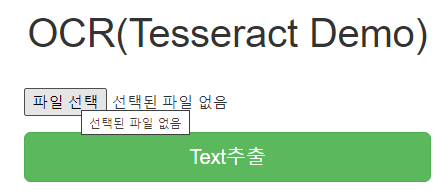

- 현재 인터넷에 공개되 있는 ‘Tesseract 데모 페이지 구현 블로그’는 구 레파지토리(google) 버전이라 실행이 불가능하다. 하여 최신 레파지토리(github) 기준으로 동작가능한 데모 페이지로 오류를 수정하여 내용을 공개한다.
- 또한, 기존 블로그는 모바일 환경을 지원하지 않지만, 모바일에서 카메라 캡처->Text추출 가능한 소스로 업데이트 예정이다.
실행화면
- 초기화면
 - Text 추출 결과

tesseract 다운로드
도커 이미지 다운로드
- https://tesseract-ocr.github.io/
- https://tesseract-ocr.github.io/tessdoc/
- https://tesseract-ocr.github.io/tessdoc/4.0-Docker-Containers.html
Tesseract 4 OCR Runtime Environment - Docker Container
(레파지토리) https://github.com/tesseract-shadow/tesseract-ocr-re
image 다운로드
1 | docker pull tesseractshadow/tesseract4re . |
샘플 테스트 (복사 & 실행)
- test.sh
1 | docker cp ./ocr-files/phototest.tif t4re:/home/work/$TASK_TMP_DIR/ |
데모 페이지
pytesseract 설치 및 Flask 웹서버 연동
- 출처: https://realpython.com/setting-up-a-simple-ocr-server/#web-server-time
- (source) https://github.com/ybur-yug/python_ocr_tutorial
(tesseract 설치/구동까지는 1번참고, 해당 자료는 tesseract 구레파지토리를 사용하는 옛날버전인듯)
pytesseract를 설치하는 부분은 1)번 + 별도 dockerfile로 구성
도커실행
- 5000: ocr tesseract flask port
1
2docker build -t ocr_tesseract_web .
docker run --name ocr_tesseract_web --publish 5000:5000 -it ocr_tesseract_web
dockerfile
- tesseractshadow/tesseract4re + Flask 웹서버 구동을 위해서 일부 오류수정 추가
1
2
3
4
5
6
7
8
9
10
11
12
13
14
15
16
17
18
19
20
21
22
23
24
25
26# start with a base image
# FROM ubuntu:14.04
FROM tesseractshadow/tesseract4re
## install dependencies
RUN apt-get update
RUN apt-get install -y liblog4cplus-dev
RUN apt-get install -y python python-pip
RUN ls
WORKDIR /
RUN ls
ADD requirements.txt /
RUN pip install -r requirements.txt
# pil error : decoder jpeg not available
RUN pip uninstall Pillow -y
RUN apt-get install -y libjpeg-dev
RUN pip install Pillow
# update working directories
ADD ./flask_server /flask_server
WORKDIR /flask_server
#EXPOSE 5000
CMD ["python", "app.py"]
Flask app
- app.py
1
2
3
4
5
6
7
8
9
10
11
12
13
14
15
16
17
18
19
20
21
22
23
24
25
26
def main():
return render_template('index.html')
def ocr():
print('--call ocr processing --')
try:
if request.files.get("image"):
print('--read image --')
# read the image in PIL format
image = request.files["image"].read()
image = Image.open(io.BytesIO(image))
print('RECV:', image.format, image.size, image.mode)
output = process_image2(image)
print('output:', output)
return jsonify({"output": output})
else:
return jsonify({"error": "only .jpg files, please"})
except Exception as e:
print('ocr processing exception:' , e)
print(traceback.format_exc())
return jsonify(
{"error": str(e)}
) - javascript
1
2
3
4
5
6
7
8
9
10
11
12
13
14
15
16
17
18
19
20
21
22
23
24
25
26
27
28
29
30
31
32
33$('#submit').on('click', function(event){
$("#results").hide()
var data = new FormData();
if(is_mobile){
var cFile = getCaptureImg();
data.append("image", cFile);
}else{
var file = $('#file')[0].files[0];
data.append("image", file);
}
$.ajax({
type: "POST",
url: "/v1/ocr",
enctype: 'multipart/form-data',
data : data,
processData: false,
contentType: false,
cache: false,
timeout: 600000,
success: function(result) {
console.log(result);
$("#post-form").hide()
$("#retry").show()
$("#results").show()
$("#results-data").html("<div class='well'>"+result["output"]+"</div>");
},
error: function(error) {
console.log(error);
}
});
});
Source
- 전체 source: https://github.com/jukyellow/artificial-intelligence-study/tree/master/13_ImageProcessing/OCR(Tesseract)/pytessract_dockerfike
- 참고: PC 크롬환경에서 테스트완료, 모바일 환경은 테스트 못함(소스는 모바일(아이폰) 환경도 가능한 모듈로 구성)